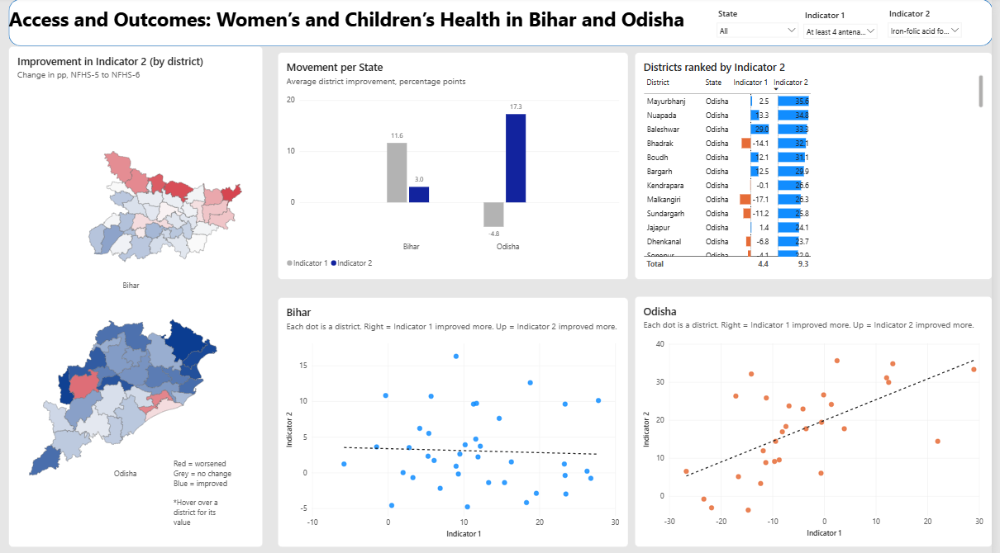
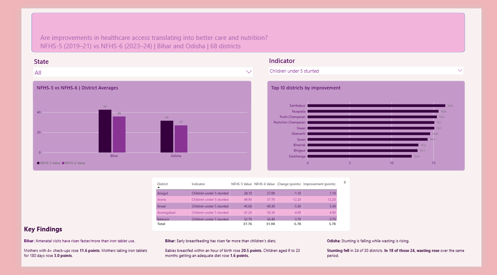

Dashboard project, part 2
The dashboard
Are improvements in healthcare access translating into better care and nutrition? NFHS-5 (2019–21) vs NFHS-6 (2023–24), Bihar and Odisha, 68 districts.
I built this dashboard in Power BI. Publishing a Power BI report online needs a work or school account, which I do not have, so I cannot embed it here. The final dashboard is shown below, followed by an interactive version that I rebuilt so that you can explore the same data. An earlier version, made while the work was in progress, is at the end of the page.
The final dashboard, built in Power BI

Screenshot to be added
Download the Power BI file (.pbix) Download the cleaned data (.xlsx)
How the data was prepared is set out in Part 1 →
The interactive version
Choose two indicators to compare how each district changed between the two surveys. The map is coloured by the second indicator, and the scatter plots test whether the two indicators moved together.
Hover over or tap a district for its value.
Improvement by district
Source: NFHS-6 District Fact Sheet Compendium (Provisional), IIPS, which reports NFHS-5 and NFHS-6 figures for each district. Improvement is the change in percentage points between the two surveys, with the sign flipped for indicators where a lower value is better, so a positive number always means progress. Each dot in a scatter plot is one district, and the dashed line is the trend.
Key findings
Bihar: More check-ups have not led to more iron tablet use
11.6 vs 3.0
Point rise in mothers with four or more check-ups, against the rise in mothers taking iron tablets for 180 days
Bihar: Care has improved in the facility, but not at home
20.5 vs 1.6
Point rise in babies breastfed within an hour of birth, against the rise in children aged 6 to 23 months getting an adequate diet
Odisha: Falling stunting is hiding rising wasting
18 of 24
Districts where wasting rose, out of the 24 where stunting fell
Work in progress: the first version
Before the final dashboard, I built this simpler version. It looks at one indicator at a time, comparing state averages and ranking districts by how much they improved.
